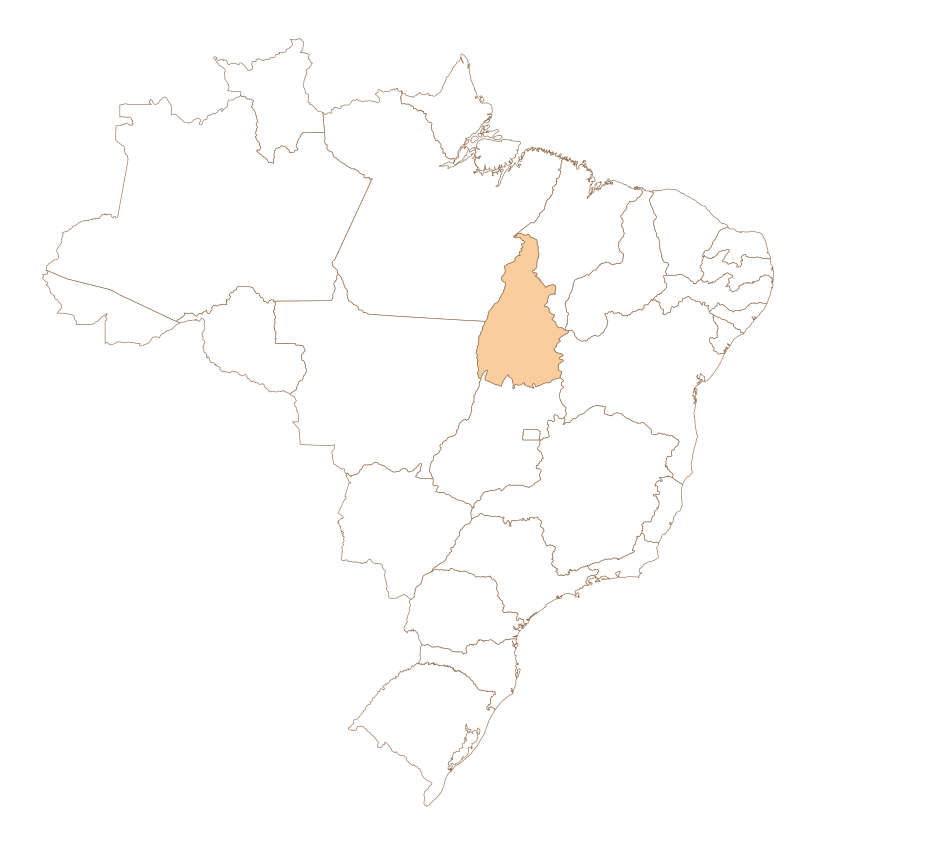

Direito Previdenciário
Atuação na concessão e revisão de benefícios previdenciários, como aposentadoria, pensão por morte, auxílio-doença, BPC/LOAS e outros direitos garantidos pela Previdência Social.
Atuação na concessão e revisão de benefícios previdenciários, como aposentadoria, pensão por morte, auxílio-doença, BPC/LOAS e outros direitos garantidos pela Previdência Social.
Atuação em recursos de multas, suspensão e cassação da CNH, processos administrativos de trânsito e demais situações relacionadas à legislação de trânsito.
Atuação em causas trabalhistas, incluindo verbas rescisórias, horas extras, reconhecimento de vínculo empregatício, rescisão indireta e outras demandas relacionadas ao direito do trabalho.
Atuação em casos de cobranças indevidas, problemas com produtos/serviços, negativação indevida, cancelamento de contratos e outras situações que envolvam o consumidor.
Atuação em casos de divórcio, pensão alimentícia, guarda de filhos, partilha de bens e processos de inventário, sempre buscando segurança jurídica e resolução adequada para cada situação.

Nosso escritório está localizado em Paraíso do Tocantins - TO, mas atuamos em demandas jurídicas em todo o território nacional.
FALE CONOSCOSe você precisa de orientação jurídica ou deseja entender melhor seus direitos, entre em contato agora mesmo. Nosso atendimento é rápido, seguro e preparado para analisar seu caso com atenção.
FALE CONOSCO
Tocantinense, nascida na cidade de Paraíso do Tocantins, onde cresci e onde permanecem minha família e minhas raízes. Educadora apaixonada, que acredita que a educação transforma vidas.
Sempre fui inconformada com injustiças, e acredito que cada pessoa merece ser ouvida, respeitada e ter seus direitos garantidos.
Com o tempo, senti que era momento de recomeçar. Enfrentando desafios e superando medos, decidi renascer profissionalmente e trilhar um novo caminho. Essa jornada fortaleceu ainda mais meu propósito de trabalhar com pessoas, contribuir para suas histórias e ajudar a construir caminhos com mais dignidade, segurança e justiça.
Atuação focada em processos de inventário, planejamento sucessório e na garantia de direitos previdenciários, oferecendo orientação jurídica segura e estratégica.
Cada cliente possui uma história e uma necessidade específica. Por isso, oferecemos um atendimento atento e dedicado, buscando compreender cada situação para oferecer a melhor orientação jurídica.
Prezamos pela transparência e pela comunicação clara durante todo o acompanhamento do caso, garantindo que o cliente esteja sempre informado e seguro sobre cada decisão jurídica.
Sim. Quando o proprietário falece, o imóvel passa a fazer parte da herança. Para vender, transferir ou regularizar o bem, é necessário realizar o inventário.
Sim, desde que sejam cumpridos os requisitos legais no caso concreto.
Pessoas idosas e pessoas com deficiência em situação de vulnerabilidade, conforme critérios da legislação vigente.
Sim. Regras específicas podem reduzir idade e tempo mínimo de contribuição para segurados especiais.
Com documentação adequada, é possível reconhecer períodos laborados sem registro para fins previdenciários.